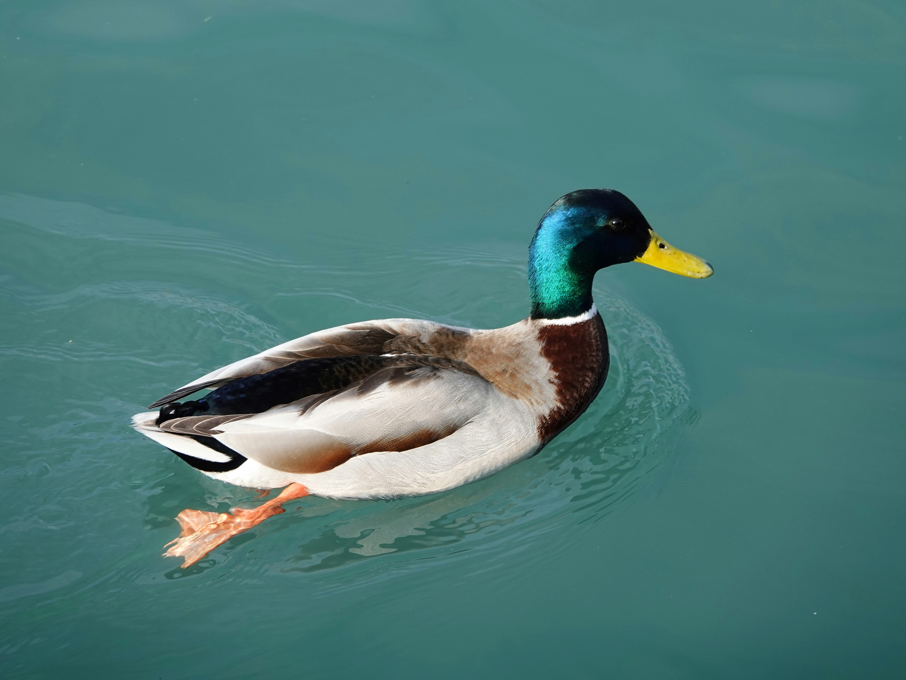

Ducks Are Awesome.
“Ducks are masterfully designed…for both aquatic and terrestrial life.” — Dave Holderread

“Ducks are masterfully designed…for both aquatic and terrestrial life.” — Dave Holderread
“No matter how organized your ducks are, life can turn in two seconds. So, you can’t keep on waiting. Because if you keep on waiting, it’s gone.” – Diem Brown
“An optimist is someone who figures that if it walks like a duck and quacks like a duck, it’s the bluebird of happiness.” – Robert Breault
“Like a duck on the pond, on the surface, everything looks calm; but beneath the water, those little feet are churning a mile a minute.” – Gene Hackman
“Four ducks on a pond, a grass-bank beyond, a blue sky of spring, white clouds on the wing—what a little thing to remember for years, to remember with tears!” – William Allingham